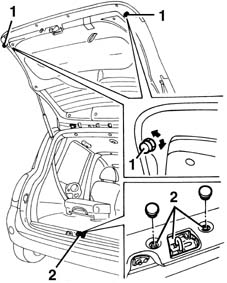
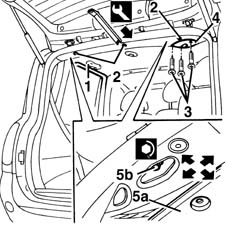

7015A14 tailgate - adjust centring and profile - includes hinge and compartment seal adaptation
- Path
- Procedures > 70 FITTINGS > 7015 TAILGATE/FLAP > 7015A tailgate assembly > 7015A14 tailgate - adjust centring and profile - includes hinge and compartment seal adaptation
- Kind
- repair procedure (removal / refitting; the operation number is the code)
- Applies to
- all engines; all production periods
- Interactive page
- https://sloeber94.github.io/elrnDB-fMltpl/en/#/2892112
Applies to: all engines; all production periods
 Removing
Removing
 Refitting
RefittingLift the tailgate.
1. Adjust buffer blocks if necessary.
2. Adjust the lock position If necessary.
7015B18 TAILGATE LOCK STRIKER - R+R .
If the adjustments described above are insufficient, adjust the tailgate hinge position as described below.

Applies to: all engines; all production periods
7040H42 rear pillar trim - r r (right and left)
7040G40 load compartment light bulb holder - r r (left only)
7040B18 L/H OR R/H SIDE TRIM (ONE) OF LUGGAGE COMPARTMENT/LOAD PLATFORM - ARRANGE (right and left)
7040B23 back upper side trim (1), lh or rh - r r (right and left)
7065C30 INTERIOR L/H OR R/H GRAB HANDLE (ONE) - R+R (rear)
7040E17 lh or rh rear courtesy light - r r (right and left)
1. Remove the rear door seals near the ceiling trim.
2. Using the appropriate tool, disengage the rear retaining buttons on the ceiling trim.
 | Name | Country |
|---|---|---|
2 | Scraper blade | 1.878.077.000 |
3. Undo the bolts securing the seat belt cover.
4. Remove the cover.
5. Slightly lower the ceiling trim (5a) and slacken the hinge bolts (5b). Adjust the tailgate position.
Tighten the bolts to the specified torque.
 | Fastening | Component | Ø | Value (daNm) |
|---|---|---|---|---|
- | Bolt | TAILGATE HINGES | M8 | 2.2 - 2.6 |
If necessary, renew the sealant between the bodyshell and hinges.

Applies to: all engines; all production periods
Refitting
RemovingFit the seat belt cover and secure it with its bolts.
Fit the ceiling trim and engage the rear retaining buttons.
Refit the rear door seals near the ceiling trim.
7040E17 lh or rh rear courtesy light - r r (right and left).
7065C30 INTERIOR L/H OR R/H GRAB HANDLE (ONE) - R+R (rear).
7040B23 back upper side trim (1), lh or rh - r r (right and left).
7040B18 L/H OR R/H SIDE TRIM (ONE) OF LUGGAGE COMPARTMENT/LOAD PLATFORM - ARRANGE (right and left).
7040G40 load compartment light bulb holder - r r (left only).
7040H42 rear pillar trim - r r (right and left).
Topics linked from this page (7)
- 7015B18 TAILGATE LOCK STRIKER - R+R
- 7040B18 L/H OR R/H SIDE TRIM (ONE) OF LUGGAGE COMPARTMENT/LOAD PLATFORM - ARRANGE
- 7040B23 back upper side trim (1), lh or rh - r r
- 7040E17 lh or rh rear courtesy light - r r
- 7040G40 load compartment light bulb holder - r r
- 7040H42 rear pillar trim - r r
- 7065C30 INTERIOR L/H OR R/H GRAB HANDLE (ONE) - R+R